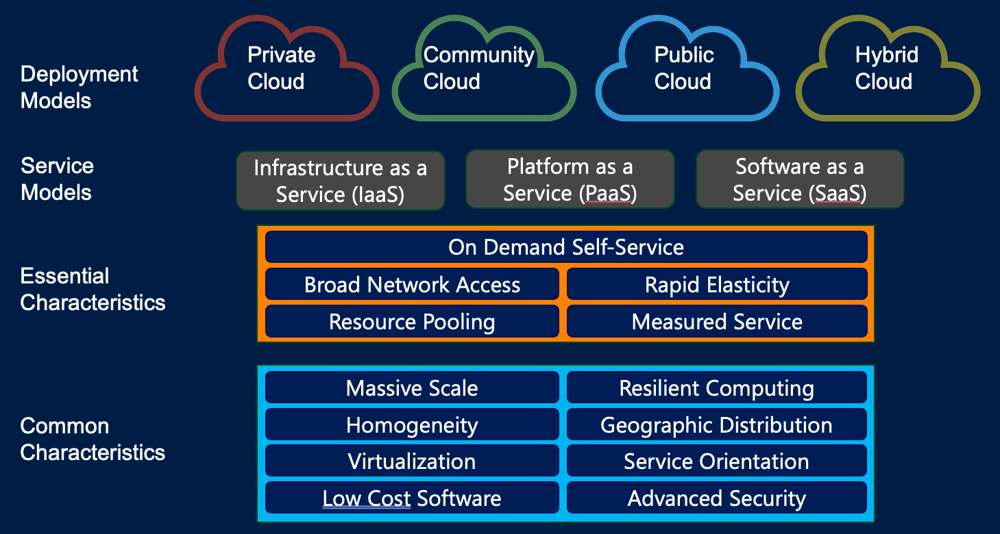
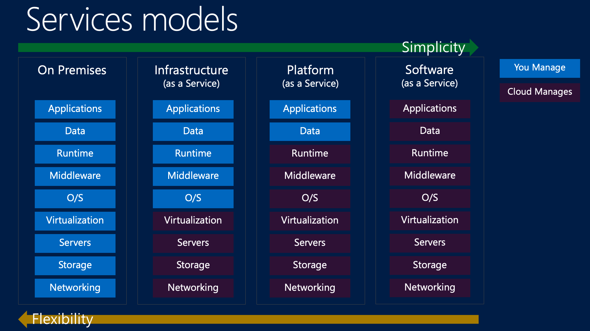
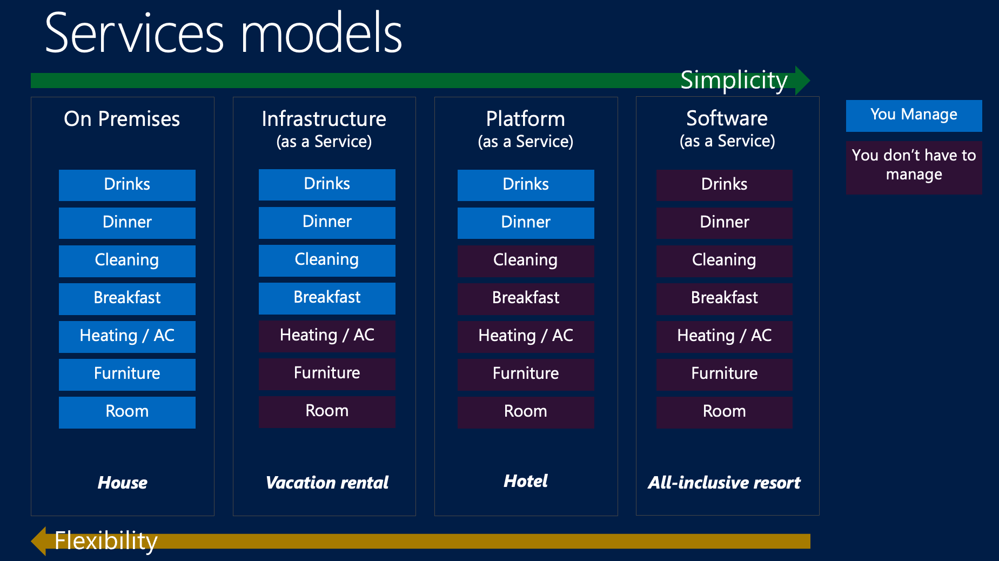

Week 2: Cloud Computing
DSAN 6000: Big Data and Cloud Computing
Fall 2025
Amit Arora and Jeff Jacobs
Tuesday, September 2, 2025
So You’ve Hit A Data-Related Wall… What Now?
| Can be processed on single machine? | No | Medium (Parallel Processing) |
Big! Parallel + Distributed Processing |
| Yes | Small (Your Laptop) |
Medium (Data Streaming) |
|
| Yes | No | ||
| Can be stored on single machine? | |||
Jeff’s Favorite “Big Data” Definition
Big data is when the size of the data itself becomes part of the problem (Loukides 2010)
- In other words: Your problem becomes a “big data problem” when you hit one or both of the walls!
You vs. Your Opps
So you find yourself smashed against a wall…
(Some of yall would fold in this scenario)

The “Pre-Cloud” Approach: Make The One Computer Faster and Faster
It Worked For… Many Decades!

Is Moore’s Law Dead?
- …Kind of?
- Focus nowadays: specialized hardware / compute architectures hyper-optimized for particular tasks
- [If you took DSAN 5500] Think of BLAS
- Graphic Processing Units (GPUs)
- Field Programmable Gate Arrays (FPGAs)
- Data Processing Units (DPUs)
- Google’s Tensor Processing Units (TPUs)
So, even upgrading our hardware didn‚Äôt help üò≠ now what do we do?
- We distribute!
- More CPUs, more memory, more storage!
My Favorite Example Ever
- Spongebob is cooking Krabby Patties too slowly to satisfy ravenous customers…
- Should he upgrade his one spatula? How bout just many simple spatulas at once!
How Do We Achieve This? …That’s Exactly What The Cloud is For!

Benefits
- Provides access to low-cost computing
- Costs are decreasing every year
- Elastic
- PaaS works!
- Many other benefits…

Q: What is The Cloud?
- A: Using someone else’s computers
NIST Definition


Service Models
Hotel Analogy
Infrastructure as a Service (IaaS)
- Virtualized computing resources delivered over the internet
- Provider manages: Physical hardware, virtualization, networking, storage
- You manage: Operating systems, applications, runtime, data, middleware
Examples and Use Cases
- Amazon EC2, Microsoft Azure VMs, Google Compute Engine
- Perfect for: Development environments, web hosting, backup & recovery
- Benefits: Rapid scaling, pay-as-you-go, global availability
Platform as a Service (PaaS)
What is PaaS?
- Complete development and deployment environment in the cloud
- Provider manages: Infrastructure, operating systems, runtime environments
- You manage: Applications and data
Examples and Use Cases
- AWS Elastic Beanstalk, Google App Engine, Microsoft Azure App Service
- Perfect for: Web applications, API development, microservices
- Benefits: Faster development, automatic scaling, integrated DevOps
Software as a Service (SaaS)
- Complete applications delivered over the internet
- Provider manages: Everything (infrastructure, platform, software)
- You manage: Your data and user access
Examples and Use Cases
- Gmail, Salesforce, Microsoft 365, Slack, Zoom
- Perfect for: Business applications, collaboration tools, CRM
- Benefits: No installation, automatic updates, accessible anywhere
The SaaS Revolution
- 80% of companies use SaaS applications
- $195 billion market size (2023)
Cloud Infrastructure and the AI Revolution
- Massive Computational Requirements
- Training large language models requires thousands of GPUs
- Cloud provides elastic access to specialized hardware
- Data Storage and Processing
- AI models need petabytes of training data
- Cloud offers unlimited, globally distributed storage
- Cost Efficiency
- Pay-per-use model for expensive AI hardware
- No upfront investment in GPU clusters
GPU Infrastructure: The AI Powerhouse
From Gaming to AI
- Originally: Graphics processing for video games
- Now: Parallel processing powerhouse for AI/ML workloads
- Architecture: Thousands of cores vs. CPUs 8-64 cores
Cloud GPU Offerings
The Scale Challenge
- GPT-4 training: Estimated 25,000 A100 GPUs for 6 months
- Meta’s AI infrastructure: 350,000+ NVIDIA H100 chips
- Cost: Single AI training run can cost $100M+
Distributed Computing and Large Clusters
Modern AI Requires Massive Clusters
- Model parallelism: Split models across multiple GPUs
- Data parallelism: Process different data batches simultaneously
- Pipeline parallelism: Different layers on different GPUs
Technologies Enabling Scale
- Kubernetes: Container orchestration for microservices
- Apache Spark: Distributed data processing framework
- Ray: Distributed AI/ML framework for Python
Data Storage Evolution
The Data Tsunami
- 2025 projection: 181 zettabytes of data globally
- AI training datasets: CommonCrawl (800TB), ImageNet (150GB)
- Real-time requirements: 1-10ms latency for inference (some cases sub-millisecond)
Storage Technologies
- Object Storage: Amazon S3, Google Cloud Storage (petabyte scale)
- High-performance: NVMe SSDs, persistent memory
- Distributed filesystems: HDFS, GlusterFS, Ceph
The Economics of Data
- Storage costs: Dropped 99.9% since 1980
- Transfer costs: Still significant for large datasets
- Edge computing: Bringing compute closer to data sources
Evolution of the Cloud
| Yesterday | Today | Tomorrow |
|---|---|---|
| Limited number of tools and vendors | Many tools and vendors to work with | Integrated tools and vendors |
| One platform - few devices | Multiple platforms - many devices | Connected platforms and devices |
| Data is scarce but manageable | Overabundance of data | Data is used for important business decisions |
| IT has major influence and control | IT has limited influence and control | IT is strategic to the business |
| People only work when they are at work | People work wherever they want | People have access to what they need wherever they are |
What Does the Cloud Look Like? Microsoft Azure Data Center
Loudon County, VA: “CLoudon”
- 70% of the world’s internet traffic passes through Loudon
- How data centers power VA’s Loudon County
- The heart of “The Cloud” is in Virginia
- CBS Sunday Morning Visits the Home of the Internet in Loudoun County
Further Reading (Rabbitholes!)
Further Reading: SaaS and Cloud Computing
SaaS and Cloud Computing Statistics:
- 1. Zylo: 111 Unmissable SaaS Statistics for 2025
- 2. Spendesk: 60+ eye-opening SaaS statistics (2025)
- 3. Substly: The 28 most important SaaS statistics in 2023
- 4. Harpa AI: SaaS Industry Key Statistics 2023
- 5. Content Beta: 110+ SaaS Statistics and Trends
- 6. Statista: Average number of SaaS apps used in the U.S. 2024
- 7. Meetanshi: SaaS Statistics for 2025: Market Size, Growth, Trends & More
Data Storage and AI Infrastructure
- 2025 global data volume (181 zettabytes)
- CommonCrawl and ImageNet dataset sizes
- AI inference latency and storage tech:
Storage Economics and Technology
GPU Infrastructure and AI Training Costs
- GPT-4 GPU count and training duration
- Meta’s NVIDIA H100 GPUs
- AI training cost estimates
Lab: EC2 ü§ù S3
References
Loukides, Mike. 2010. “What Is Data Science?” O’Reilly Media. https://www.oreilly.com/radar/what-is-data-science/.
Mell, Peter, and Timothy Grance. 2011. “The NIST Definition of Cloud Computing.” National Institute of Standards and Technology, Special Publication 800 (2011): 145. https://nvlpubs.nist.gov/nistpubs/legacy/sp/nistspecialpublication800-145.pdf.
DSAN 6000 Week 2: Cloud Computing